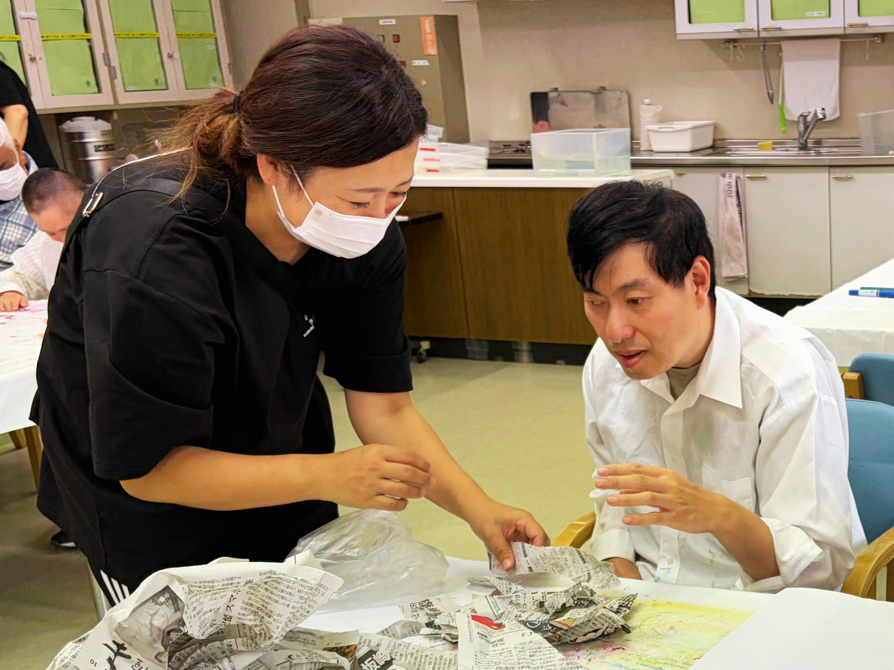

Info
サービス内容
Info
生活介護とは
常に介護を必要とする方に対して、昼間、排せつ・食事などの日常生活上の支援を行うとともに、創作的活動や生産活動の機会を提供する障害福祉サービスです。
Activities
主な活動内容

日常生活支援
見守りや日常生活上の必要な支援を行います。知的障害のある方が安心・安全に活動できるよう、個別のペースに合わせたサポートを行います。

創作活動支援
絵画、手芸、工作など、季節に合わせた様々なアート活動を行います。表現する楽しさを味わい、豊かな感性を育みます。

生産活動
簡単な内職作業や園芸活動など、それぞれの能力に応じた作業を行います。働く喜びや達成感を感じていただけます。

集団・余暇活動
音楽療法、体操、季節の行事など、仲間と一緒に楽しむ時間を大切にします。コミュニケーションの機会を増やし、社会性を育みます。
Daily Flow
一日の流れ
8:40〜
送迎出発
ご自宅までお迎えに上がります（対応エリア：あきる野市内）。
9:50〜
通所・手洗い・トイレ誘導
施設に到着後、手洗いやうがいを行い、一息つきます。日々の健康状態を確認する看護師が常駐（※医療的ケアの提供は行っていません）しており、体調管理に努めます。
10:00〜
始まりの挨拶・午前プログラム
一日の予定を確認し、運動プログラム等で体を動かします。
12:00〜
昼食
昼食は弁当の注文制（自費）となっています（ご持参も可能です）。
12:30〜
歯磨き・昼休み
食後は各自リラックスして過ごします。テレビを見たり、音楽を聴いたり、自分のペースで休養をとります。
14:00〜
午後プログラム
曜日別の活動（月＝レクリエーション、火＝音楽、水＝フリーイベント、木＝美術、金＝運動）を行います。
15:00〜
帰り支度・終わりの挨拶
今日一日の振り返りをし、明日への期待に繋げます。
16:00〜
送迎・帰宅
順次、送迎車でご自宅まで安全にお送りします。
見学・ご相談を随時受け付けています
「どんな雰囲気なのか見てみたい」「利用について相談したい」など、まずはお気軽にお問い合わせください。
見学・お問い合わせはこちらお電話でも承ります：
042-595-2324